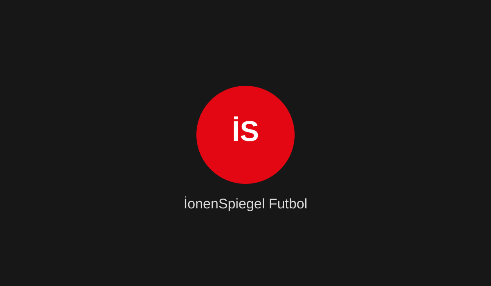

17 Eylül 2026 · BEŞIKTAŞ
Beşiktaş, Avrupa Ligi'nde Marsilya'yı ağırlıyor
Beşiktaş, UEFA Avrupa Ligi lig aşamasındaki ilk maçında 17 Eylül Perşembe günü Olimpik Marsilya'yı konuk edecek. Karşılaşma Tüpraş Stadı'nda saat 22.00'de başlayacak.
Anadolu Ajansı ↗

Haber tartışması
Yorumunu yaz. Yorumlar tüm ziyaretçilerle paylaşılır ve yeni yorumlar e-posta ile bildirilir.